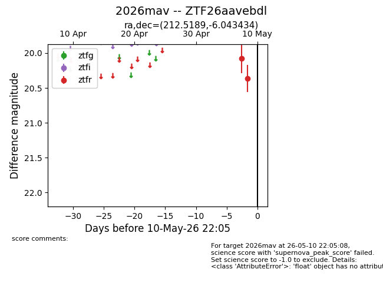
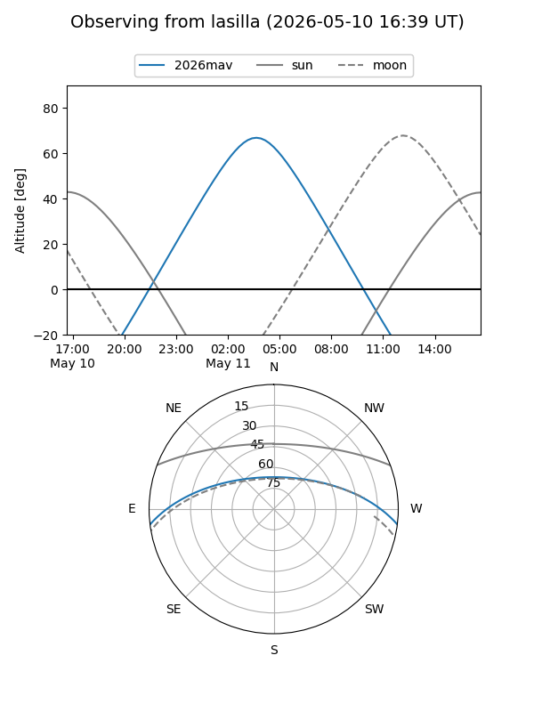
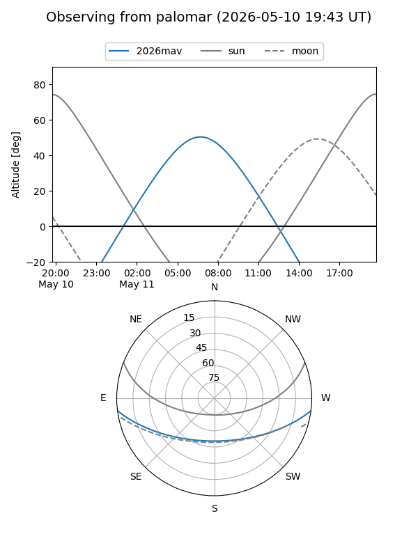
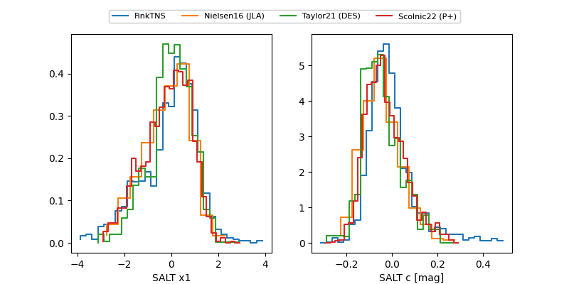

2026mav
Target 2026mav at 2026-05-10 22:13
Aliases and brokers:
FINK: link
Lasair: link
ALeRCE: link
TNS: link
YSE: link
alt names
ZTF26aavebdl (ztf,fink_ztf)
2026mav (tns,yse)
Coordinates:
equatorial (ra, dec) = 212.5189,-6.04343
equatorial (HMS+DMS) = 14:10:04.53,-06:02:36.36
galactic (l, b) = (335.6525,+51.76185)
Flags:
Photometry:
last ztfr=20.37
2 ztfr detections
Lightcurve

Visibility


Additional plots
